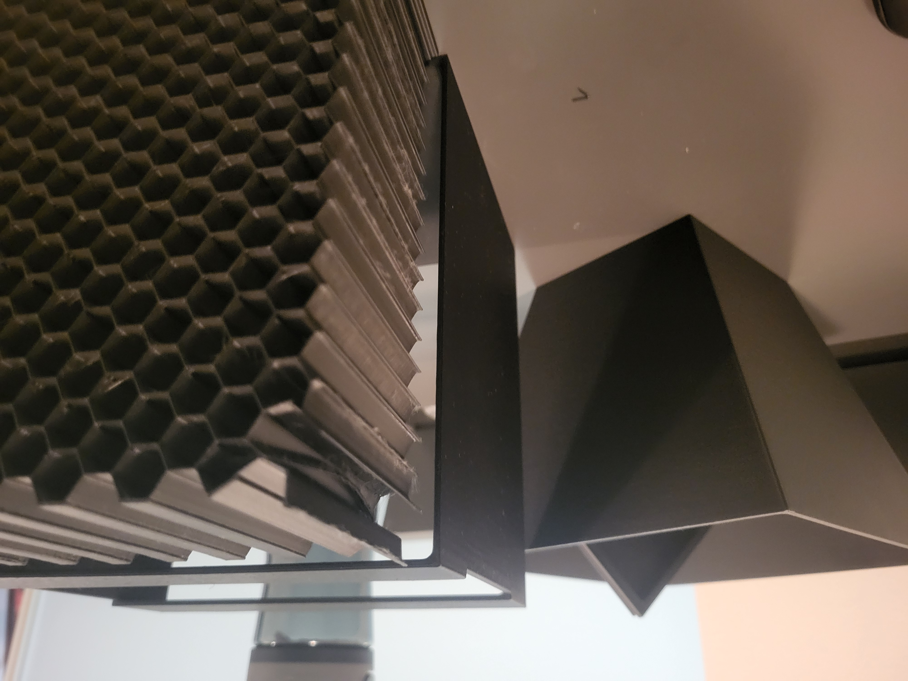

Desktop Wind Tunnel
Design, fabrication, and experimental testing of a compact desktop wind tunnel for low-speed aerodynamic flow visualization and prototype-scale aerodynamic testing.
Project Overview
This project involved designing and fabricating a compact open-circuit wind tunnel for qualitative aerodynamic testing and flow visualization. The goal was to create a desktop-scale system that could produce reasonably uniform flow while remaining manufacturable using accessible tools such as Fusion 360, 3D printing, and modular assembly methods.
The wind tunnel was divided into functional sections: a settling chamber, honeycomb flow straightener, contraction region, test section, diffuser, suction fan, and rear guard. This layout follows the standard wind tunnel design logic of conditioning the flow before it enters the test section, then recovering pressure downstream through a diffuser [1], [5].
A major design constraint was size. The tunnel had to fit on a desk while still providing a usable test section for small models and smoke visualization. As a result, the project required tradeoffs between flow quality, fan power, printability, assembly complexity, and overall footprint.
Design Methodology
The settling chamber was designed with an approximately 180 mm × 180 mm cross-section. A honeycomb flow straightener was incorporated to reduce lateral velocity components, swirl, and non-axial flow before the air entered the contraction region. Honeycomb structures are commonly used in wind tunnel settling chambers because they help align the flow and suppress transverse velocity variations [3].
The contraction section connected the larger settling chamber to a smaller 100 mm × 100 mm test section. A contraction ratio close to 4:1 was selected because contraction ratios in this range are commonly recommended for improving flow uniformity in compact wind tunnel designs [1]. The contraction was also shaped to avoid abrupt geometry changes that could introduce separation or additional turbulence.
The test section was sized to provide enough room for simple aerodynamic models, smoke visualization, and cylindrical bluff-body tests while still allowing a single 120 mm fan to produce useful flow velocities. The design prioritized visual clarity and repeatable qualitative testing over high-speed or precision aerodynamic measurement.
A diffuser was placed downstream of the test section to improve pressure recovery before the flow reached the fan. Diffuser and contraction design are both emphasized in subsonic wind tunnel design literature because they influence pressure losses, flow separation, and test-section flow quality [5].
The fan was placed at the rear of the tunnel in a suction configuration. This choice was intended to reduce the amount of fan-induced disturbance upstream of the test section. While this design decision was also supported by hobbyist wind tunnel examples and builder experience [6], it was treated as a practical design choice rather than a precision aerodynamic validation.
CAD Development & Assembly
The tunnel was modeled in Fusion 360 as a modular assembly. The CAD process focused on packaging the settling chamber, contraction, test section, diffuser, and fan mount into a compact geometry that could be manufactured and assembled using available tools. The modular design also allowed individual components to be revised without redesigning the entire tunnel.
The assembly was developed around smooth internal transitions. This was important because abrupt area changes can create separation, recirculation regions, and non-uniform flow entering the test section. The contraction and diffuser were therefore treated as major aerodynamic components rather than simply connecting geometry.


Honeycomb Mesh Development
The honeycomb flow straightener was one of the most important design features. Its purpose was to improve flow directionality before the contraction by reducing cross-flow components and swirl. Honeycomb structures are widely used for this purpose in wind tunnel settling chambers and flow-conditioning systems [3], [4].
The first version of the honeycomb mesh was designed with aerodynamic function in mind, but it proved difficult to manufacture reliably. During fabrication, the geometry was too fragile and experienced structural failure. This forced a redesign that balanced aerodynamic flow-straightening performance with practical printability.
.png)
.png)

The second version of the honeycomb mesh was redesigned with improved structural support and print reliability. This iteration better reflected the real engineering tradeoff between ideal geometry and manufacturable geometry. The final mesh was successfully integrated into the wind tunnel prototype.
.png)
.png)
Prototype Fabrication
The final prototype was fabricated primarily using 3D-printed components and assembled into a compact open-circuit wind tunnel. The physical build required attention to fit, sealing, alignment, and stiffness. In small wind tunnels, leakage and internal recirculation can noticeably degrade flow quality, so the assembly process focused on minimizing gaps and maintaining a clean internal flow path.
The fan was mounted downstream of the diffuser so that the tunnel operated in suction. This layout helped keep the fan behind the test section rather than forcing fan-generated turbulence directly into the flow-conditioning region.


Flow Visualization & Testing
Smoke visualization was used to qualitatively evaluate the flow inside the test section. Cylindrical bluff bodies were placed in the flow to observe wake formation, flow separation, and vortex shedding behavior. This provided a visual way to assess whether the tunnel could generate coherent flow structures suitable for demonstration and small-scale testing.
The smoke tests showed that the tunnel could support visible wake structures downstream of cylindrical objects. Although the setup was not instrumented for quantitative velocity or turbulence measurements, it successfully demonstrated the tunnel’s usefulness as a compact experimental platform for introductory aerodynamic visualization.


Engineering Takeaways
This project developed practical experience in aerodynamic design, CAD modeling, additive manufacturing, and experimental testing. The most valuable part of the project was the iteration between design intent and manufacturing reality: components that were aerodynamically reasonable still had to be redesigned to survive fabrication and assembly.
The final prototype demonstrated the feasibility of a compact, low-cost desktop wind tunnel for educational flow visualization. Future improvements could include adding mesh screens, improving sealing, measuring velocity with an anemometer, and comparing observed wake behavior with analytical or computational predictions.
References
[1] A. Karlsson, Design and Construction of a Portable Wind Tunnel. Available: https://www.diva-portal.org/smash/get/diva2%3A1880442/FULLTEXT01.pdf
[2] Massachusetts Institute of Technology, “MIT unveils new Wright Brothers Wind Tunnel.” Available: https://aeroastro.mit.edu/news-impact/mit-unveils-new-wright-brothers-wind-tunnel/
[3] Wikipedia, “Honeycomb structure.” Available: https://en.wikipedia.org/wiki/Honeycomb_structure
[4] NASA, Experimental Study of Wind-Tunnel Flow Quality. Available: https://ntrs.nasa.gov/api/citations/19870014229/downloads/19870014229.pdf
[5] NASA, Subsonic Wind Tunnel Design. Available: https://ntrs.nasa.gov/api/citations/19770005050/downloads/19770005050.pdf
[6] Reddit, “My friend made this desktop wind tunnel...” Available: https://www.reddit.com/r/3Dprinting/comments/1bvtdux/my_friend_made_this_desktop_wind_tunnel_and/